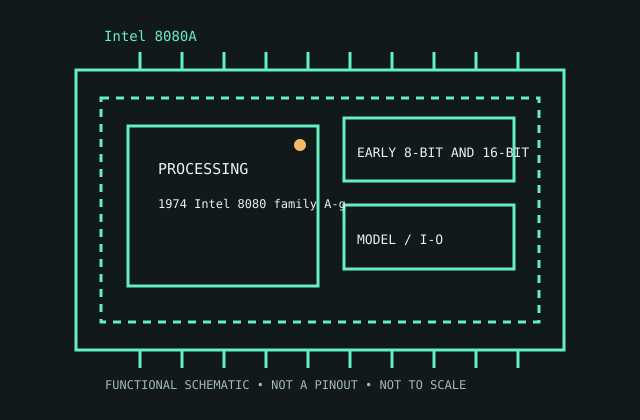

[ EARLY 8-BIT AND 16-BIT PROCESSORS // IDENTIFIED CPU ]
Intel 8080A
1974 Intel 8080 family A-grade revision. 8-bit ALU/data bus, 16-bit address bus (64 KB), 2 MHz, 40-pin DIP; external clock/support circuitry.

MODEL IDENTIFICATION: Intel 8080A. Match full model suffix, stepping and package to the physical item and cited documentation.
Recorded specifications
| Cataloged model | Intel 8080A |
|---|---|
| Era / family | 1974 Intel 8080 family A-grade revision. |
| Model specifications | 8-bit ALU/data bus, 16-bit address bus (64 KB), 2 MHz, 40-pin DIP; external clock/support circuitry. |
| Compatibility | 8080A bus, external clock and multiple rails; unlike 8085. |
| Variants / limits | Distinguish original 8080 and later 8085A. |
Compatibility and variants
- 8080A bus, external clock and multiple rails; unlike 8085.
- Distinguish original 8080 and later 8085A.
- Check system-vendor CPU support, board revision, firmware minimum, package, memory, cooling and power before installation; similar socket naming does not prove compatibility.
Service and archival notes
Record suffix, clock generator, rails and 8224/8228 support.
Archive the complete marking/OPN/sSpec, stepping, physical condition, tested host revision, firmware, memory population, cooling, and test conditions. Distinguish published limits from measurements.
Sources & further reading
- Intel ARK model lookup — Intel 8080AOfficial Intel model specification search for the cataloged product.
- Intel technical archive — Intel 8080A product familyArchived Intel-authored processor data sheets/manuals; match model and revision.
- Intel processor-history reference — Intel 8080AHistorical context for Intel processor generations; use the exact data sheet for limits.
Use the matching manufacturer data sheet revision and platform vendor’s CPU list for final fit decisions.